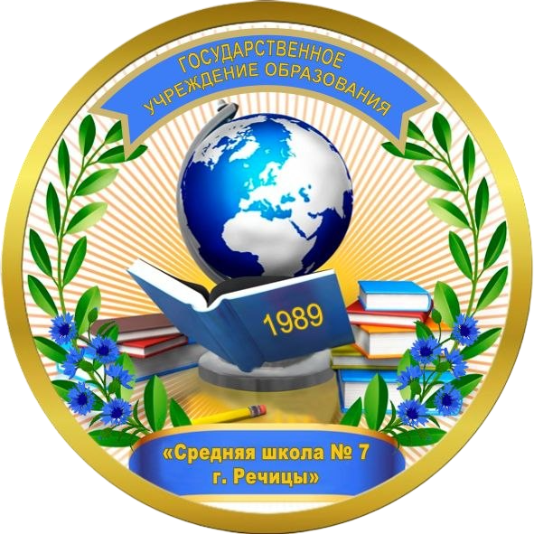

Команда проекта
Авторы проекта
Педагоги и учащиеся клуба патриотов-спасателей «БАГОР» средней школы №7 г. Речицы, которые собирали материалы, писали тексты и создавали этот сайт.

Свои герои г. РечицаКоманда проекта
Педагоги и учащиеся клуба патриотов-спасателей «БАГОР» средней школы №7 г. Речицы, которые собирали материалы, писали тексты и создавали этот сайт.